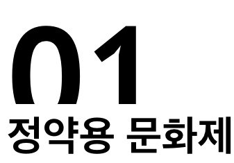
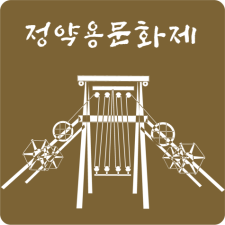
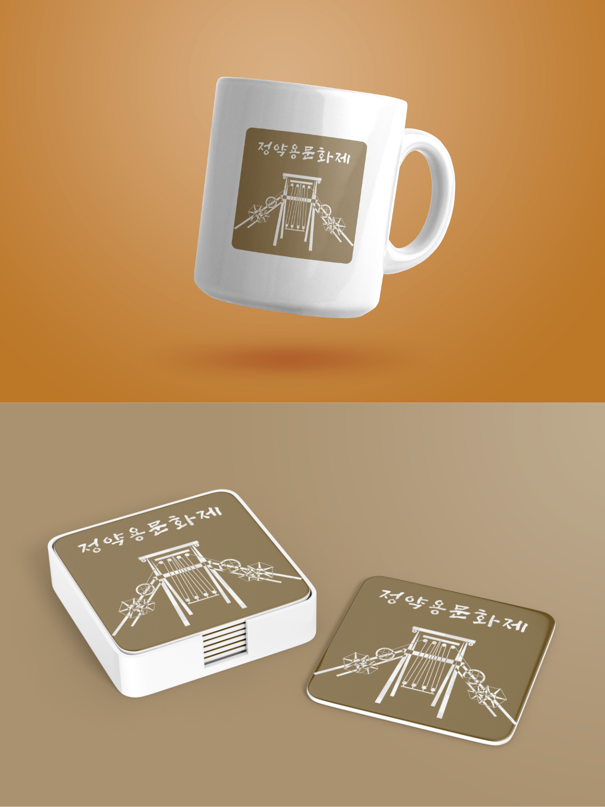
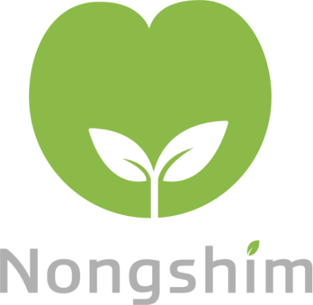
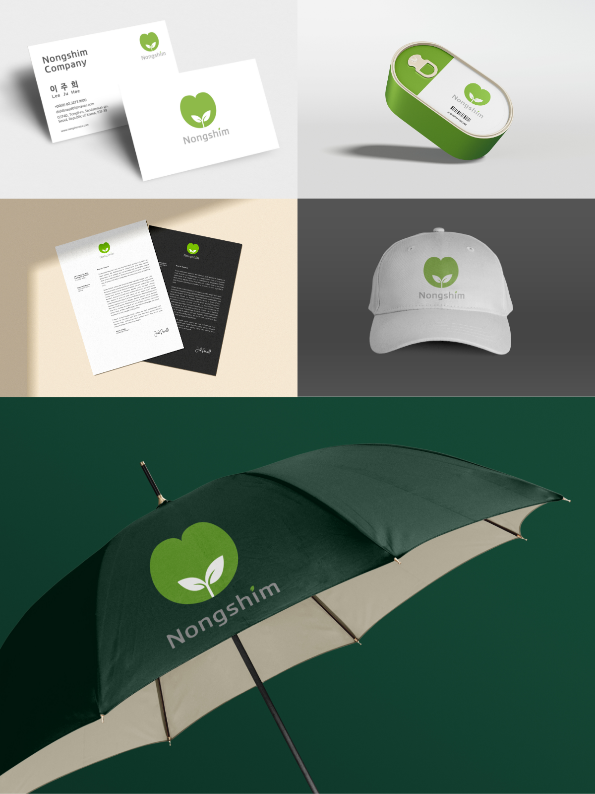
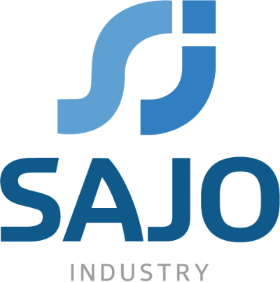
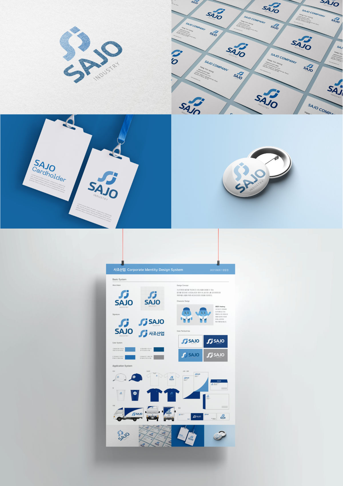
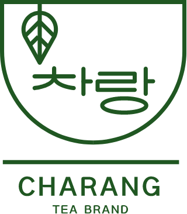
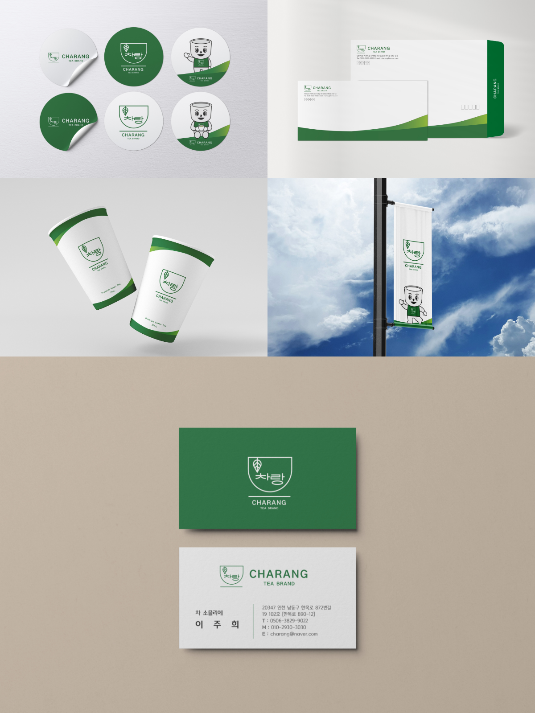

Identity Design
아이덴티티 디자인

Jeong Yak yong Culture Festival
정약용 선생의 업적과 사상, 삶을 상징할 수 있는 순수 창작 이미지
엠블럼형으로 정약용 선생이 만드신 수원 화성의 대표적인 상징물
인 ‘거중기’와 붓 글씨체를 사용해 제작했습니다.


Nongshim Logo Redesign
농심의 심볼마크는 ‘농심씨드’ 라고 부릅니다. 씨드(SEED)
란 씨, 열매 그리고 종자의 뜻으로 이는 씨앗을 싹 틔우고 열
매 맺게 하는 생명의 근본의 의미가 드러나게 디자인했습니
다.


SAJO Identity Logo Redesign
수산자원의 발전을 주도해 온 사조산업을 대표할 수 있는 참
치를 모티브로 사조(SAJO)의 S와 J를 강조하였으며 푸른색
을 사용해 푸른 바다와 든든한 희망을 의미하고 있습니다.


Charang Logo Design
차랑 charang은 ‘차랑 함께’의 의미를 줄여 영어로 Charang으로
네이밍하였다. 차와 함께 자연을 드러낼 수 있는 디자인 컵셉으로
차의 이미지와 브랜드를 보여주는 디자인을 하고자 했습니다.


찻잔에 담긴 찻잎과 차랑 로고가 상징적으로 나타내어 폰트로 강조되어 안정감을 주는 차처럼 표현했습니다. 따뜻한 녹색 컬러를 사용하
여 차랑이 추구하는 편안함, 자연적, 따뜻함의 이미지를 극대화 시켰습니다.